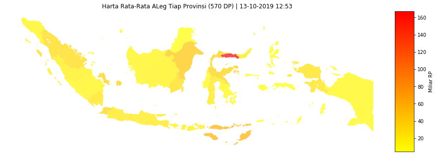
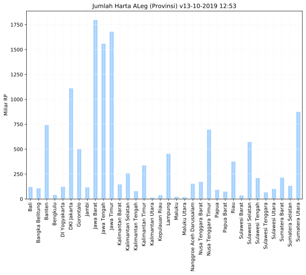
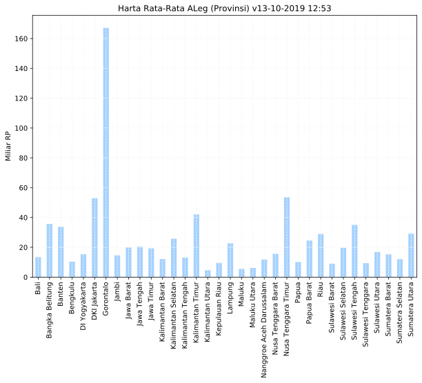
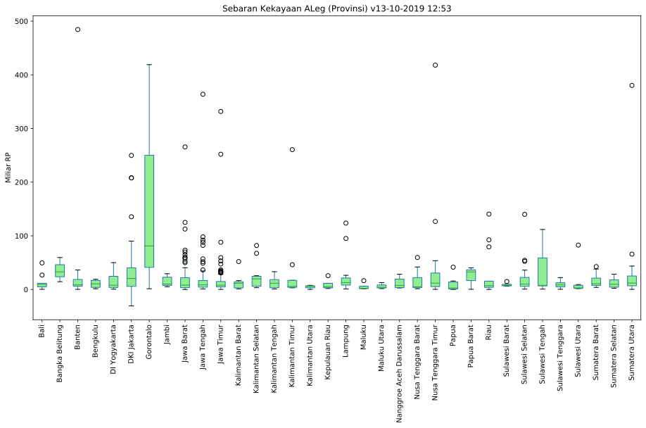

Last updated: 13-10-2019 12:53
Data Science Wakil Rakyat
Highlight Data ALeg Provinsi
575 ALeg | 570 Seed Data Points
Visualisasi dan Olah Data Terbuka Anggota DPR RI 2019.
Data tidak / kurang akurat? Bantu kami meningkatkan kualitas data dengan mengisi form ini.

Data ALeg Provinsi
| # | Provinsi | ALeg | Jumlah Harta | Mean |
|---|---|---|---|---|
| 1 | Bali | 9 | 120.9 | 13.4 |
| 2 | Bangka Belitung | 3 | 106.9 | 35.6 |
| 3 | Banten | 22 | 742.4 | 33.7 |
| 4 | Bengkulu | 4 | 41.3 | 10.3 |
| 5 | DI Yogyakarta | 8 | 122.5 | 15.3 |
| 6 | DKI Jakarta | 21 | 1110.9 | 52.9 |
| 7 | Gorontalo | 3 | 501.6 | 167.2 |
| 8 | Jambi | 8 | 117.0 | 14.6 |
| 9 | Jawa Barat | 90 | 1796.9 | 20.0 |
| 10 | Jawa Tengah | 76 | 1558.4 | 20.5 |
| 11 | Jawa Timur | 87 | 1679.2 | 19.3 |
| 12 | Kalimantan Barat | 12 | 145.9 | 12.2 |
| 13 | Kalimantan Selatan | 10 | 257.5 | 25.7 |
| 14 | Kalimantan Tengah | 6 | 78.6 | 13.1 |
| 15 | Kalimantan Timur | 8 | 336.5 | 42.1 |
| 16 | Kalimantan Utara | 3 | 14.0 | 4.7 |
| 17 | Kepulauan Riau | 4 | 38.0 | 9.5 |
Data ALeg Provinsi
| # | Provinsi | ALeg | Jumlah Harta | Mean |
|---|---|---|---|---|
| 18 | Lampung | 20 | 453.7 | 22.7 |
| 19 | Maluku | 4 | 22.1 | 5.5 |
| 20 | Maluku Utara | 3 | 18.5 | 6.2 |
| 21 | Nanggroe Aceh Darussalam | 13 | 153.0 | 11.8 |
| 22 | Nusa Tenggara Barat | 11 | 172.1 | 15.6 |
| 23 | Nusa Tenggara Timur | 13 | 696.3 | 53.6 |
| 24 | Papua | 9 | 91.5 | 10.2 |
| 25 | Papua Barat | 3 | 73.6 | 24.5 |
| 26 | Riau | 13 | 375.7 | 28.9 |
| 27 | Sulawesi Barat | 4 | 36.1 | 9.0 |
| 28 | Sulawesi Selatan | 29 | 571.5 | 19.7 |
| 29 | Sulawesi Tengah | 6 | 210.1 | 35.0 |
| 30 | Sulawesi Tenggara | 7 | 65.8 | 9.4 |
| 31 | Sulawesi Utara | 6 | 101.2 | 16.9 |
| 32 | Sumatera Barat | 14 | 213.8 | 15.3 |
| 33 | Sumatera Selatan | 11 | 132.0 | 12.0 |
| 34 | Sumatera Utara | 30 | 874.5 | 29.1 |
Jumlah Kekayaan ALeg (Provinsi)

Kekayaan Rata-Rata

Sebaran Kekayaan ALeg (Provinsi)

Peringkat 1 Tiap Provinsi
| # | Provinsi | Partai | ALeg | Jumlah Harta |
|---|---|---|---|---|
| 1 | Bali | Golkar | GDE SUMARJAYA LINGGIH | 49.6 |
| 2 | Bangka Belitung | PDIP | RUDIANTO TJEN | 59.6 |
| 3 | Banten | Golkar | ANDI ACHMAD DARA | 484.4 |
| 4 | Bengkulu | PAN | DEWI CORYATI | 19.0 |
| 5 | DI Yogyakarta | PKB | SUKAMTO | 50.0 |
| 6 | DKI Jakarta | PDIP | ERIKO SOTARDUGA B.P.S | 249.8 |
| 7 | Gorontalo | NasDem | RACHMAD GOBEL | 419.0 |
| 8 | Jambi | PAN | A. BAKRI H.M. | 29.4 |
| 9 | Jawa Barat | PAN | EDDY SOEPARNO | 265.6 |
| 10 | Jawa Tengah | PDIP | PUAN MAHARANI | 363.8 |
| 11 | Jawa Timur | Golkar | HAENY RELAWATI R.W. | 331.8 |
| 12 | Kalimantan Barat | PKB | DANIEL JOHAN | 52.0 |
| 13 | Kalimantan Selatan | Golkar | HASNURYADI SULAIMAN | 82.0 |
| 14 | Kalimantan Tengah | PDIP | WILLY MIDEL YOSEPH | 33.2 |
| 15 | Kalimantan Timur | Golkar | RUDY MAS'UD | 260.6 |
| 16 | Kalimantan Utara | PDIP | DEDDY YEVRI HANTERU SITORUS | 7.7 |
| 17 | Kepulauan Riau | PAN | ASMAN ABNUR | 25.7 |
Peringkat 1 Tiap Provinsi
| # | Provinsi | Partai | ALeg | Jumlah Harta |
|---|---|---|---|---|
| 18 | Lampung | PKB | MUHAMMAD KHADAFI | 123.7 |
| 19 | Maluku | NasDem | ABDULLAH TUASIKAL | 16.4 |
| 20 | Maluku Utara | NasDem | ACHMAD HATARI | 12.8 |
| 21 | Nanggroe Aceh Darussalam | PKB | RUSLAN M. DAUD | 28.4 |
| 22 | Nusa Tenggara Barat | Golkar | SARI YULIATI | 59.7 |
| 23 | Nusa Tenggara Timur | PDIP | HERMAN HERY | 418.1 |
| 24 | Papua | Golkar | TRIFENA M. TINAL | 41.6 |
| 25 | Papua Barat | Golkar | ROBERT JOPPY KARDINAL SAB | 40.4 |
| 26 | Riau | Golkar | ARSYAD JULIANDI RACHMAN | 140.5 |
| 27 | Sulawesi Barat | Demokrat | SUHARDI DUKA | 14.9 |
| 28 | Sulawesi Selatan | Gerindra | LA TINRO LA TUNRUNG | 140.0 |
| 29 | Sulawesi Tengah | Golkar | MUHIDIN MOHAMAD SAID | 111.8 |
| 30 | Sulawesi Tenggara | Golkar | RIDWAN BAE | 22.1 |
| 31 | Sulawesi Utara | NasDem | FELLY ESTELITA RUNTUWENE | 82.7 |
| 32 | Sumatera Barat | Demokrat | MULYADI | 42.7 |
| 33 | Sumatera Selatan | Golkar | ALEX NOERDIN | 28.6 |
| 34 | Sumatera Utara | PDIP | SIHAR P.H. SITORUS | 380.2 |